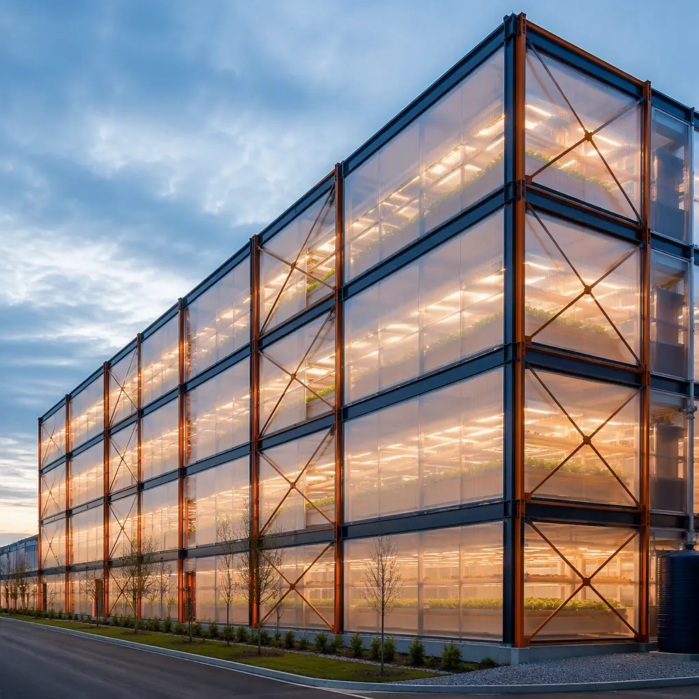
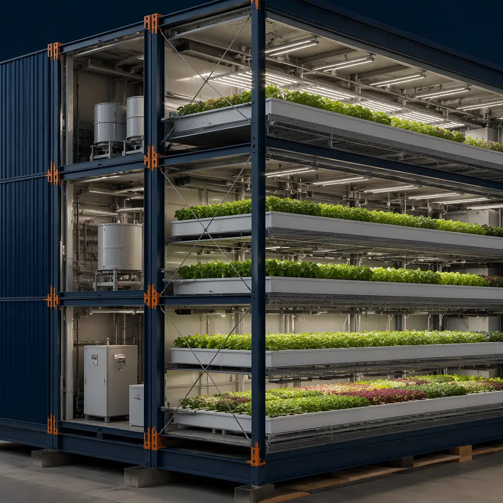
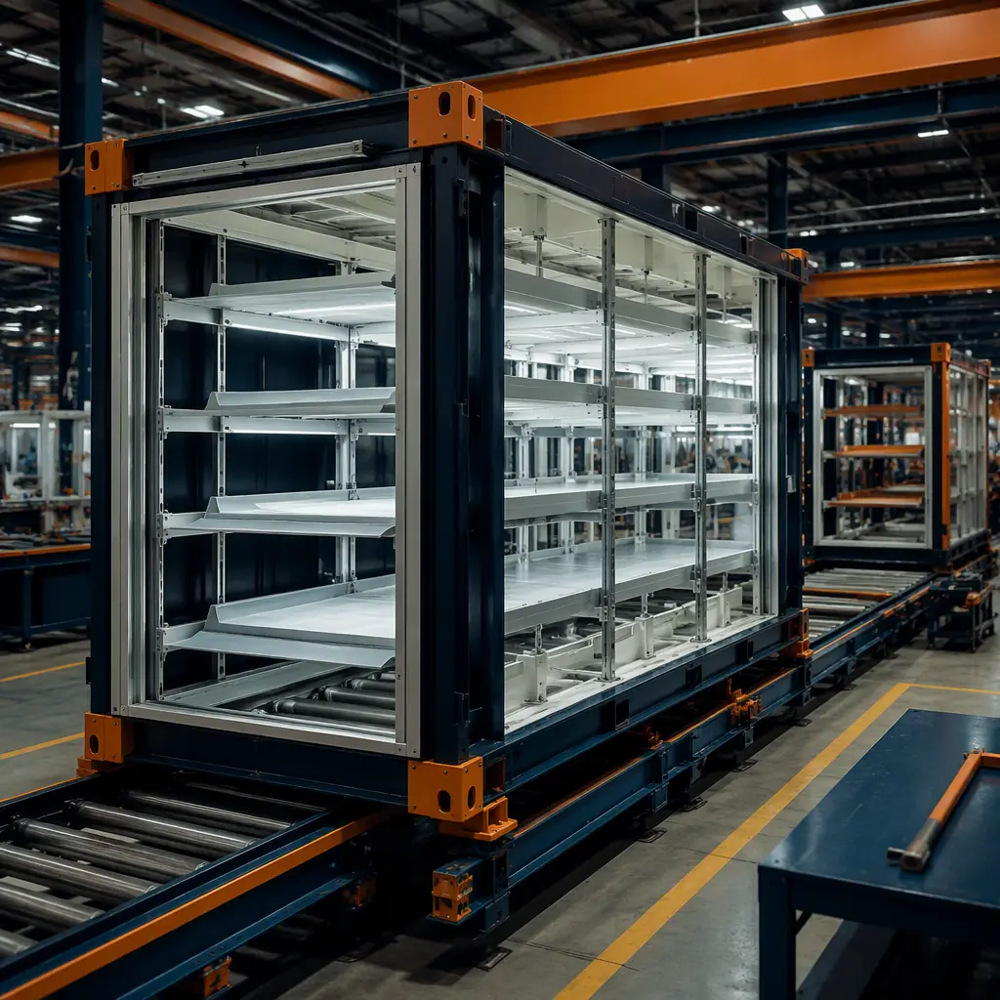
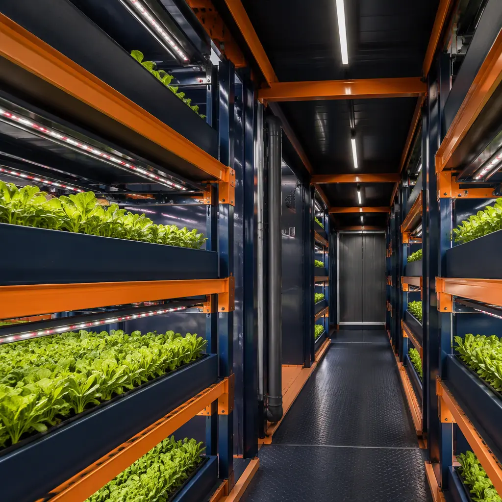

The global vertical farming market is projected to reach $32.7 billion by 2030 (MarketsandMarkets), driven by simultaneous pressures on the global food system: climate volatility disrupting outdoor harvests, arable land loss at 12 million hectares per year, and urbanizing populations that will require a 70% increase in food production by 2050 according to the FAO. Indoor farms address these pressures by producing crops in precisely controlled environments — but the facilities themselves are extraordinarily demanding engineered structures. A commercial vertical farm must maintain humidity control within ±3% relative humidity, temperature stability within ±1°C across multi-tier growing racks reaching 30–40 feet in height, CO2 enrichment at 800–1,200 ppm during photoperiods, precisely calibrated LED spectrum management across 6–12 growing tiers, and irrigation systems that recycle and sterilize 95% of applied water through UV and reverse osmosis treatment — all while operating 365 days a year with zero downtime, because a 48-hour environmental failure in a grow room destroys an entire crop cycle representing $500,000–$2 million in harvest revenue. Converting a conventional warehouse to meet these specifications typically takes 12–18 months from lease signing to first harvest. Modular construction compresses this timeline to 7–10 months by building the grow room modules, HVAC systems, irrigation plumbing, and food safety envelope in a factory while site work proceeds in parallel. For context on how modular methods achieve these timeline compressions across building types, see our analysis of energy-efficient modular building design and our guide to BIM-to-factory digital workflows.

The Engineering Challenge of Indoor Farming Facilities
Commercial vertical farms are among the most technically demanding building types in contemporary construction — more mechanically intensive than data centers, with tighter environmental tolerances than pharmaceutical clean rooms, and operating economics more sensitive to facility performance than any other commercial building category. A 60,000 sq ft vertical farm (typical for a production-scale leafy greens operation serving a metropolitan area) must simultaneously satisfy structural, mechanical, plumbing, electrical, and sanitary requirements that conventional warehouse construction was never designed to meet. Understanding where conventional construction fails and how modular methods address each failure point is the foundation of evaluating modular for CEA facilities.
Multi-layer growing rack integration with the building structure. Production-scale vertical farms use racking systems with 6–12 growing tiers reaching 30–40 feet in height, with each tier carrying 15–25 pounds per square foot of live load (plants, growing media, water). The cumulative dead and live load on the building slab can reach 250–350 psf — 2–3× the standard 100–125 psf design load for warehouse floor slabs. In conventional construction, the structural engineer designs a slab-on-grade or elevated slab to support the racking load, but the racking system itself is supplied by a separate agricultural equipment vendor who installs the racks after the building envelope is complete. The interface between the racking system (which requires anchor bolt patterns at 4-foot grid spacing with ±1/8-inch tolerance) and the slab (which is poured to ±1/4-inch per 10 feet flatness tolerance) produces field-fit conflicts that delay rack installation by 3–5 weeks and generate change orders averaging $40,000–$80,000 for anchor bolt relocation, slab patching, and re-inspection. In modular construction, the grow room modules are factory-built with the racking anchor bolt patterns pre-set in the steel module floor frame using CNC-drilled mounting plates — the bolt pattern accuracy is ±1/16 inch, and the racking system bolts directly to the module frame without any field drilling, patching, or tolerance coordination between separate vendors. For more on how modular methods solve structural coordination challenges, see our deep dive on modular lab construction, which addresses similar precision-environment integration challenges.
HVAC with dehumidification — the single largest cost driver in CEA facilities. Plants transpire approximately 95% of the irrigation water they receive, releasing it as water vapor into the grow room atmosphere. A 50,000 sq ft leafy greens grow room with 8–10 tiers produces 8,000–12,000 gallons of transpiration water per day that must be removed from the air to maintain 60–75% relative humidity (the target range for most leafy greens and herbs). If the dehumidification system is undersized by even 15%, relative humidity rises above 80% and the resulting condensation on leaf surfaces creates conditions for fungal pathogens (powdery mildew, botrytis) that can destroy an entire crop cycle within 72 hours. Conventional CEA HVAC design uses either desiccant dehumidification wheels (which add $150,000–$250,000 in capital equipment cost for a 50,000 sq ft facility) or mechanical cooling-based dehumidification with reheat (which adds $80,000–$120,000 in operating cost annually from the energy penalty of overcooling to condense moisture and then reheating to grow-room temperature). In modular construction, dedicated dehumidification modules are factory-built as integrated HVAC units with pre-balanced air handling, pre-commissioned refrigeration circuits, and pre-calibrated humidity sensors. These modules are tested at full load in the factory before shipping — a capability that conventional site-built HVAC systems cannot match because they cannot be run at full load until the building envelope is complete and the grow room is loaded with plants. The factory testing eliminates the commissioning gap that produces 80% of CEA HVAC performance shortfalls in conventional construction. For more on MEP integration, see our analysis of factory quality control systems.

Irrigation, Lighting, and Sanitation in a Single Module Envelope
The grow room module must integrate three additional systems that are normally installed by separate subcontractors in sequence: the irrigation system (NFT channels, DWC rafts, or aeroponic misters with RO water supply and nutrient dosing injection), the LED lighting arrays (generating 50–80 watts per square foot of heat load that must be removed by the HVAC system), and the sanitation infrastructure (ISO 7–8 clean room equivalent for propagation areas, with HEPA filtration, positive pressure cascades from clean to dirty zones, and antimicrobial surfaces). In conventional construction, the irrigation subcontractor installs after the HVAC subcontractor, who installs after the electrical subcontractor, who installs after the structural steel is erected — a four-trade sequence that requires 16–20 weeks on the critical path and produces coordination conflicts at every handoff. In modular construction, all four systems (structure, irrigation, lighting, sanitation) are installed in the factory module bay where the sequence is compressed to 2–3 weeks and every system is tested in an integrated state before the module ships. The LED arrays are pre-wired to the module's electrical panel, the irrigation manifolds are pre-connected to the module's plumbing risers, and the HEPA filter housings are pre-mounted in the module's ceiling plenum with pre-verified positive pressure differential of 0.05–0.10 inches water column relative to adjacent zones. This is precision environment construction that factory production methods deliver as a standard product rather than as a site-coordinated custom assembly.

How Modular Construction Solves Each Layer of a CEA Facility
The CEA facility is not a single building type — it is a collection of functionally distinct spaces, each with its own environmental specification, that must operate as an integrated controlled environment. Modular construction solves each layer of this facility by building the function-specific modules as separate factory-fabricated units and connecting them on site through pre-engineered module-to-module interfaces.
Grow room modules with integrated LED racks and irrigation. The grow room module is the core production unit of a vertical farm. Factory-built grow room modules arrive with the multi-tier racking structure pre-installed, the LED lighting arrays pre-wired and pre-aimed at each growing tier, the irrigation channels pre-mounted with pre-sloped drainage to central collection manifolds, and the floor surface pre-finished with antimicrobial epoxy coating and pre-sloped to trench drains at 1/4-inch per foot. The module's HVAC ductwork is pre-installed in the ceiling plenum with pre-balanced supply diffusers positioned to deliver uniform air distribution across all growing tiers — a challenge that site-installed ductwork consistently fails, producing temperature differentials of 3–5°F between top and bottom tiers that reduce yield uniformity by 10–15% in conventionally built grow rooms.
HVAC modules with dedicated dehumidification. Instead of designing and installing the dehumidification system as part of the building-wide HVAC — a design approach that forces the entire building's mechanical system to be sized for the grow room's dehumidification load, which is 3–5× higher than any other zone — modular CEA design uses dedicated HVAC modules serving each grow room independently. These modules are factory-built as self-contained mechanical rooms: the desiccant wheel or DX dehumidification unit, the air handling unit, the refrigeration circuit, the condensate recovery system (recycling dehumidification water back to the irrigation supply), and the control panel are all pre-installed, pre-piped, pre-wired, and pre-commissioned. The module ships as a plug-and-play mechanical unit that requires only final duct connections and power hookup on site.
Central processing and packaging module. Post-harvest processing — trimming, washing, drying, weighing, packaging, and cold storage — is a food manufacturing operation that must meet the same sanitation standards as any fresh-cut produce facility. The processing module is factory-built with washdown floors sloped to trench drains, stainless steel wall and ceiling surfaces (no porous materials, no horizontal ledges where dust and pathogens accumulate), USDA-compliant hand-washing stations and foot-bath entry vestibules, and dedicated HVAC with 100% outside air and HEPA filtration. Building this space conventionally in a warehouse conversion requires demolishing standard warehouse finishes and rebuilding to food-grade standards — a $250–$350/sq ft cost that modular processing modules deliver for $190–$260/sq ft because the stainless surfaces, drains, and HEPA HVAC are installed in the factory production line rather than retrofitted into an existing shell.
Propagation and lab module. The propagation area — where seeds are germinated and seedlings are raised for 10–21 days before transplanting to the grow room — requires the highest level of environmental control in the entire facility. This space operates at ISO 7 clean room equivalent, with HEPA-filtered supply air, positive pressure relative to all adjacent zones, and antimicrobial surfaces on all walls, floors, and ceilings. In conventional construction, the propagation room is a framed-in room within the warehouse shell that must achieve clean room performance using site-built walls that are nearly impossible to seal to the required leakage rate (<0.5 air changes per hour at 50 Pa pressure differential). In modular construction, the propagation module is factory-built as a sealed steel box with pre-installed HEPA filtration, pre-verified pressure cascade, and factory-conducted smoke testing to verify unidirectional airflow from clean to dirty zones — tests that are standard in pharmaceutical clean room construction but nearly impossible to perform on a conventionally built propagation room inside a warehouse shell. For operators requiring both CEA and laboratory-grade environments, see our guide to modular cold storage construction, which addresses the complementary cold chain infrastructure that vertical farms require for post-harvest handling.

Cost Structure — Modular vs Traditional CEA Build
The cost structure of CEA facility construction differs fundamentally from standard commercial construction because the MEP systems (HVAC with dehumidification, LED lighting and controls, irrigation and plumbing) represent 35–45% of total construction cost, compared to 15–20% in a standard office or retail building. This MEP-heavy cost structure is precisely where modular construction delivers the largest savings, because factory installation of complex mechanical and electrical systems eliminates the site labor inefficiency, trade sequencing gaps, and weather-dependent installation quality problems that drive conventional CEA construction costs 20–30% above initial estimates. The following analysis uses a 60,000 sq ft production-scale vertical farm prototype (50,000 sq ft grow room, 10,000 sq ft processing and packaging, plus central mechanical and propagation areas) as the reference case.
| Facility Component | Conventional ($/sq ft) | Modular ($/sq ft) | Savings |
|---|---|---|---|
| Grow room (50,000 sq ft) | 350–450 | 280–340 | −20–24% |
| Processing/packaging (10,000 sq ft) | 250–350 | 190–260 | −24–26% |
| HVAC & dehumidification | 80–120 | 60–85 | −25–29% |
| LED lighting & controls | 60–90 | 50–70 | −17–22% |
| Irrigation & plumbing | 40–60 | 30–45 | −25% |
| Total (60,000 sq ft) | 780–1,070 | 610–800 | −22–25% |
The largest percentage savings are concentrated in HVAC and processing/packaging — the two categories most affected by the retrofit penalty in conventional warehouse conversions. In a conventional project, the HVAC system must be designed around the constraints of an existing warehouse shell (roof height, column spacing, utility stub locations), while modular HVAC modules are designed concurrently with the grow room modules so the ductwork, refrigeration piping, and control wiring align at every module interface without field modification. The processing/packaging module savings are even more pronounced because the stainless steel surfaces, floor drains, and HEPA HVAC that food safety compliance requires are standard elements of the modular processing module but cost 2–3× more to retrofit into a conventional warehouse. For a comprehensive discussion of modular construction costs across building types, see our 2026 modular construction pricing guide and our analysis of sustainable modular building design.
Timeline Compression — From Lease to First Harvest
The construction timeline for a CEA facility is not merely a project management metric — it is a direct determinant of the facility's investment return. Every month of earlier harvest generates revenue from crop sales, and every month of construction delay represents both carrying costs (lease payments on an empty building, construction loan interest) and lost harvest revenue that can never be recovered. The timeline difference between conventional and modular CEA construction is the single most compelling reason that commercial vertical farm operators are evaluating modular delivery methods.
Conventional timeline: 18–24 months from lease to first harvest. The conventional path follows a sequential workflow: 6 months for design and permitting (architectural design, MEP engineering, food safety plan review, building permit), followed by 12–18 months of construction (warehouse shell modifications, slab reinforcement for racking loads, MEP rough-in, grow room build-out, system commissioning, crop trial runs). The construction phase cannot begin until design and permitting are complete, and every trade on the construction phase works in sequence because the warehouse shell provides no opportunity for parallel work paths.
Modular timeline: 10–11 months from lease to first harvest. The modular path creates three parallel work streams: 4 months of design and factory coordination (architectural design, module engineering, permitting, factory production scheduling), followed by 3 months of factory module fabrication (grow room modules, HVAC modules, processing modules, propagation modules all built simultaneously in the factory) that runs in parallel with 3 months of site work (foundation, utility connections, site infrastructure), then 3 months of site installation (module delivery, craning, connection, commissioning). The total elapsed time from lease signing to first harvest is 10–11 months — 40–50% faster than the conventional 18–24 months.
Revenue acceleration: $2–5 million in additional first-year harvest revenue. A 60,000 sq ft leafy greens vertical farm producing 2–3 million pounds per year at wholesale prices of $3.50–$5.00 per pound generates $7–$15 million in annual harvest revenue. An 8–12 month earlier harvest enabled by modular construction captures $2–$5 million in additional first-year revenue that is permanently lost in a conventional construction timeline. For operators whose investment models assume a 4–5 year payback period, the revenue acceleration alone can reduce the payback period by 12–18 months — an improvement that changes the investment decision for marginal projects. For more on construction timeline optimization across project types, see our guide to BIM-based modular construction coordination.
Food Safety Compliance Built Into the Module
Food safety compliance is not an optional add-on for CEA facilities — it is a regulatory requirement that shapes every surface, every air handling decision, and every operational workflow in the building. The FDA Food Safety Modernization Act (FSMA) Produce Safety Rule, the Global Food Safety Initiative (GFSI) certification schemes (SQF, BRC, PrimusGFS), and HACCP plan requirements collectively mandate a facility design that prevents contamination through building systems rather than relying solely on operational procedures to catch contamination after it occurs.
Factory-installed washdown surfaces with no horizontal ledges. FDA regulations for food contact surface zones require that walls, floors, and ceilings have no horizontal ledges where dust, condensation, or organic material can accumulate and become a microbial harborage point. In conventional construction, the standard building elements — wall-to-floor junctions with baseboard trim, ceiling grid T-bars, electrical conduit mounted on wall surfaces, HVAC diffusers with exposed mounting flanges — all create horizontal ledges. Retrofitting these out of a conventional warehouse requires a level of finish carpentry and stainless steel fabrication that costs $40–$60/sq ft above standard finishes. In modular construction, the processing module walls are factory-fabricated as smooth stainless steel panels with coved floor-to-wall transitions (a continuous curve rather than a 90-degree corner), ceiling panels are flush-mounted without exposed grid, and all electrical and plumbing penetrations are sealed with food-grade silicone at the factory before the module leaves the production line. The module arrives with a food-safe surface envelope that requires no field modification.
HEPA-filtered positive-pressure propagation rooms. The propagation room is the most contamination-sensitive zone in the facility because seedlings have no developed immune response and a pathogen introduction at the propagation stage contaminates every plant transplanted from that batch. The FSMA-compliant propagation room requires HEPA filtration (99.97% efficiency at 0.3 microns), positive pressure relative to all adjacent zones (minimum 0.05 inches water column differential, verified by continuous monitoring with alarmed pressure sensors), and a vestibule entry with interlocked doors to prevent simultaneous opening that would break the pressure cascade. In modular construction, the propagation module is factory-built as a sealed pressure vessel with pre-installed HEPA fan-filter units, pre-wired differential pressure monitors connected to the building management system, and a factory-tested airlock vestibule with interlocked door controls. The factory acceptance test verifies the pressure cascade, the HEPA filter integrity (using dispersed oil particulate testing), and the airlock interlock function before the module ships — tests that are standard in pharmaceutical facility commissioning but that almost no conventionally built vertical farm conducts before crop introduction, because the site environment makes these tests difficult to perform reliably. For operators who need both CEA and pharmaceutical-grade environments, see our guide to factory QC systems in modular construction.
Pest exclusion through factory-sealed module envelopes. Insect pests (aphids, thrips, whiteflies, spider mites) are the most common cause of crop loss in indoor farms after environmental control failures. The pest entry pathway is almost always through the building envelope — gaps at wall-to-roof junctions, unsealed utility penetrations, loading dock door perimeters, and personnel entry doors. A conventionally built warehouse shell, even when retrofitted for CEA use, has a building envelope leakage rate of 0.25–0.50 CFM per square foot of envelope area at 75 Pa — enough air exchange to admit insects through gaps smaller than 0.5 mm. Modular CEA grow room envelopes are factory-sealed steel boxes with continuous welded corner joints, gasketed module-to-module connections, and compression-sealed utility penetrations. The as-built envelope leakage rate for a modular grow room is 0.05–0.10 CFM/sq ft — a 5× improvement over warehouse retrofits. The factory conducts a blower door test on each completed module to verify the leakage rate, and modules that exceed the specification are re-sealed before shipping. This level of envelope integrity is the building-systems equivalent of the integrated pest management (IPM) programs that CEA operators rely on, and it reduces pest-related crop losses by 60–80% compared to conventionally built indoor farms according to operator experience data from the top five US vertical farming companies.
Is Modular Right for Your Vertical Farm?
Modular construction for CEA facilities is not the right solution for every indoor farming project — but it is the right solution for a specific project profile that represents the highest-growth segments of the vertical farming industry: production-scale leafy greens and herb operations (60,000–150,000 sq ft) where the construction timeline directly determines the investor return, multi-crop CEA facilities that need independently controlled environmental zones for different crops (requiring the modular approach of dedicated HVAC and envelope per zone), and operators planning multi-facility rollouts where the factory production model delivers consistent quality across geographically distributed sites. The global vertical farming construction market exceeded $4.5 billion in 2025 and is projected to grow at 20%+ CAGR through 2030 (Grand View Research) — growth that will increasingly strain the limited pool of contractors who understand CEA facility construction. Modular delivery offers a structural solution: shift construction complexity from the job site (where CEA-specific expertise is scarce) to the factory (where precision manufacturing expertise is standard), and deliver grow room modules that arrive with the environmental performance verified before they leave the production line. For controlled environment agriculture operators who have experienced the cost and schedule consequences of conventional warehouse conversions, modular construction represents not just a different delivery method but a fundamentally different risk profile — one where the facility's environmental performance is a factory-verified product specification rather than an as-built hope.